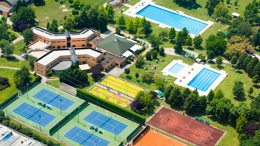

Benvenuti!
Una vera e propria “Città dello Sport” costituita da: 3 campi da calcio (un campo da calcio a 7 in erba sintetica, un campo da calcio a 11 in erba sintetica, un campo di calcio a 5), 4 campi da paddle, 2 campi da tennis esterni di terra rossa e 1 interno in erba sintetica, ed infine una piscina interna ed una esterna rispettivamente da 25m e 50m.
Il centro sportivo, inoltre, è provvisto di un ambulatorio medico e fisioterapico, sala polifunzionale (conferenze, eventi, ecc.), bar e cucina attrezzata, percorso vita, ampi parcheggi.
Il Centro Sportivo Paolotti è un impianto comunale di 150.000 mq, moderno e polivalente
Calcio giovanile, serie D, femminile e amatoriale, calcio a 5, paddle, tennis e piscine. Sono queste le attività principali che vengono praticate al “Centro Sportivo Paolotti” di via Trieste 65 a Padova, autentico “polmone” sportivo immerso nel verde.
Inaugurato il 01 dicembre del 2020, si estende su una superficie complessiva di 150 mila metri quadrati.
Tutti i campi vengono usufruiti sia dagli amatoriali che le giovanili e vengono messi a disposizione su prenotazione.
Il piazzale che si incontra all’ingresso dell’area è invece dedicato all’Associazione nazionale atleti olimpici e azzurri d’Italia, di cui fanno parte tutti coloro che almeno una volta nella propria carriera hanno indossato la maglia della Nazionale, di tutte le discipline riconosciute dal Coni.
Alla base della creazione di questo polo sportivo, voluto dal comune di Padova, in particolare dal sindaco, e sostenuto anche dagli altri enti locali, è stata posta la necessità di dare ai giovani della città un nuovo spazio dove poter praticare le diverse attività, nel verde, lontano dalla caoticità del centro città e potendo usufruire di strutture d’avanguardia. Strutture che operano tutto l’anno, in pieno regime anche durante l’estate.